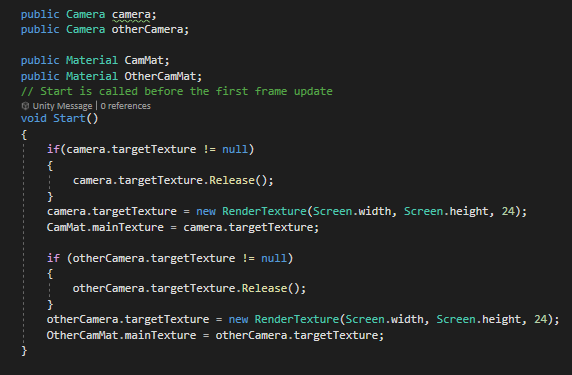

{kind=link}
Zakaria El Ghoul Aadi
PORTAL
PORTAL
Ik heb een portal gemaakt in unity met een render texture en wat wiskunde toegepast om het te laten werken. Hieronder staat de code van de shader:
Code:
Shader "Unlit/ScreenCutoutShader"
{
Properties
{
_MainTex ("Texture", 2D) = "white" {}
}
SubShader
{
Tags{ "Queue" = "Transparent" "IgnoreProjector" = "True" "RenderType" = "Transparent" }
Lighting Off
Cull Back
ZWrite On
ZTest Less
Fog{ Mode Off }
Pass
{
CGPROGRAM
#pragma vertex vert
#pragma fragment frag
#include "UnityCG.cginc"
struct appdata
{
float4 vertex : POSITION;
float2 uv : TEXCOORD0;
};
struct v2f
{
//float2 uv : TEXCOORD0;
float4 vertex : SV_POSITION;
float4 screenPos : TEXCOORD1;
};
v2f vert (appdata v)
{
v2f o;
o.vertex = UnityObjectToClipPos(v.vertex);
o.screenPos = ComputeScreenPos(o.vertex);
return o;
}
sampler2D _MainTex;
fixed4 frag (v2f i) : SV_Target
{
i.screenPos /= i.screenPos.w;
fixed4 col = tex2D(_MainTex, float2(i.screenPos.x, i.screenPos.y));
return col;
}
ENDCG
}
}
}
Foto's

